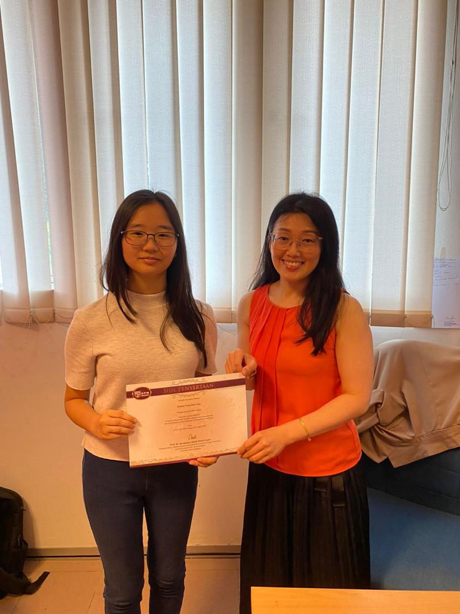
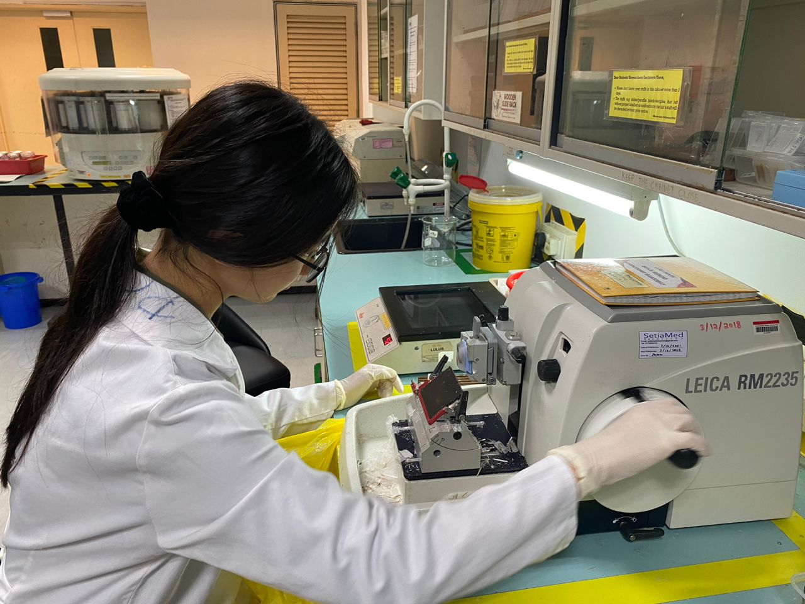
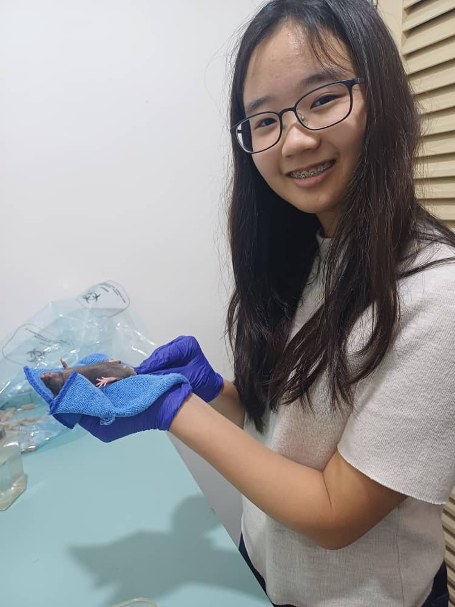
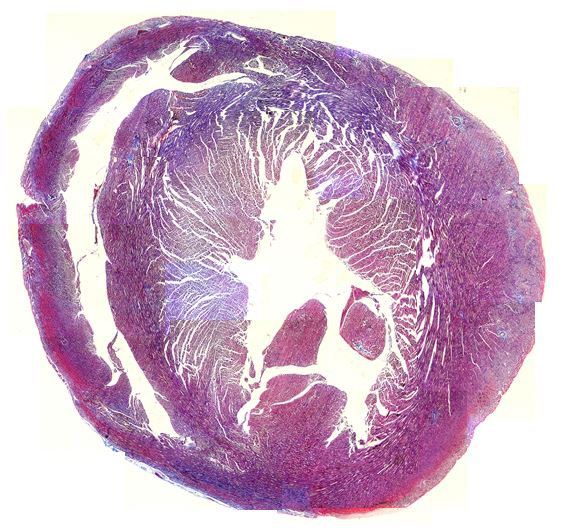
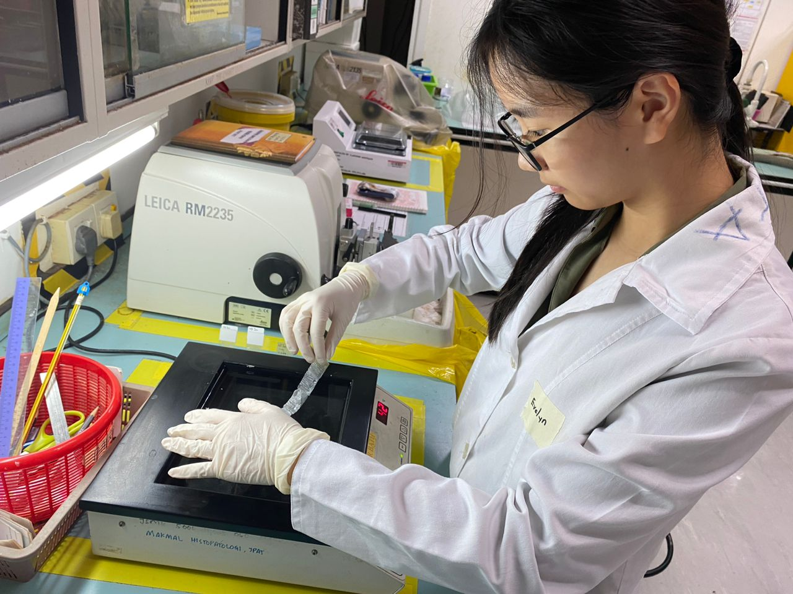

Being an intern at Universiti Putra Malaysia's Faculty of Medicine and Health Sciences.
This summer, I had the incredible opportunity to intern at
Universiti Putra Malaysia's Faculty of Medicine and Health Sciences
under the supervision of Dr Mok Pooi Ling. This internship gave me
the chance to dive deep into biomedical research in tissues and stem cells.
Over the course of the last four weeks, I was able to engage in hands-on
experiments, learn advanced scientific techniques, and experience
the day-to-day work of a research lab.
During this internship, I got to work with a variety of equipment
and techniques involving cell cultures, tissue staining, bioinformatics,
histology and animal models. Using ImageJ as my main software, I was able
to help in identifying elastin percentage in blood vessels, amounts of scar tissue and
quantify cell apoptosis in a given stained sample.
My internship at UPM was a period of immense growth and learning.
Each day brought new challenges that I was more than eager to immerse
myself in, from troubleshooting experiments
that didn’t go as planned to quickly adapting to new techniques.
I realised that research is not just about results, but also about
persistence, critical thinking, and collaboration. The mentorship
I received was invaluable, and I learned how to approach problems
with a scientific mindset.
As I look ahead, I am so excited to have the chance to continue
exploring these areas, whether through my studies, future internships,
or personal projects. In conclusion, my time at UPM has been a
transformative experience
that has equipped me with new and valuable technical skills. I am grateful for
the opportunity to have been a part of such an innovative and dynamic
environment, and I look forward to applying the knowledge and
experience I’ve gained to make a meaningful impact in the field!
A massive thank you to Dr Rachel and her research team at UPM for allowing me to
have this wonderful experience!
Photos (not extensive because of gore!!):




